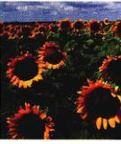

细胞生物学 第3篇 生物能学
第8章 能量和代谢
------------------------- 137

有机体利用酶来催化化学反应，当一个反应的产物含有高于起始反应物的能量时，多余的能量就是由细胞的能量货币——ATP所提供的。
- 8.1 热力学定律描述了能量的转换138
- 8.2 酶是生物催化剂142
- 8.3 ATP 是生命的能量流通货币147
- 8.4 细胞生命活动的化学本质——新陈代谢148
第9章 细胞呼吸
------------------------- 153

细胞通过食物分子中的C—H化学键来获得能量。其中一部分能量来自化学键的重排，大部分来自氧化，即利用C—H化学键的电子还原大气中的氧，从而形成水。
- 9.1 细胞从化学键中获得能量154
- 9.2 细胞呼吸氧化食物分子155
- 9.3 蛋白质和脂肪的分解代谢也是重要的能量来源170
- 9.4 细胞能够在无氧条件下进行食物代谢173
第10章 光合作用
------------------------- 175

光合作用是呼吸作用的反作用，利用太阳光能，从水分子中获得的电子还原碳氧化物，同时产生氧气。所有有机分子都是光合作用的直接或间接产物。
- 10.1 什么是光合作用176
- 10.2 光合作用研究：实验的历程177
- 10.3 色素从阳光中捕获能量180
- 10.4 细胞利用光反应捕获的能量和还原力来制造有机分子189